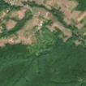
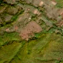

3,8 ha de pădure schimbată lângă Avram Iancu
Între 7 septembrie 2026 și 17 septembrie 2026, pe aproximativ 3,8 ha de pădure din comuna Vârfurile, lângă Avram Iancu, județul Arad, imaginile Sentinel-2 arată că vegetația a dispărut sau s-a schimbat puternic. E o schimbare care merită verificată.
Autorizația de tăiere
pășune, nu pădure
Analistul nu vede pădure tăiată: înainte era pășune, fâneață sau teren cu copaci răzleți și tufăriș, nu pădure închisă. Dacă s-au scos copaci de pe pășune, și asta cere autorizație de la ocolul silvic (Codul silvic, art. 60), dar aceste autorizații nu apar sigur în registrul public, așa că nu putem spune dacă există. Nu e dovadă de ilegalitate.
Ce se vede în poze: În poza detaliată zona marcată este un teren deschis cu iarbă, tufișuri și copaci răzleți, la marginea pădurii, nu o pădure deasă. După, terenul apare dezgolit, de culoare roz-maronie, deci pare curățat pășunea sau vegetația mărunt, nu tăiată o pădure.


Înainte și după: Copernicus Sentinel-2, 10 m pe pixel, conturul zonei cu portocaliu. Poza detaliată (Esri World Imagery) e de acum 1–4 ani: arată ce era acolo înainte, nu tăierea.
Pe scurt
- Identificator
- 20260917_46348_22447
- Locul
- Avram Iancu, comuna Vârfurile, județul Arad (SIRUTA 12689)
- Coordonate (centru)
- 46.34828, 22.44667 · Google Maps · OpenStreetMap
- Suprafața
- 3,8 ha (din pixeli de 10 m; ± câțiva pixeli pe margine)
- Ultima imagine cu pădurea întreagă
- 7 septembrie 2026
- Prima imagine cu schimbarea
- 17 septembrie 2026
- Imagini în care se vede schimbarea
- 6
- Cât de sigur e semnalul din satelit
- scăzută
- Autorizația cea mai apropiată
- APV 2500286900760 · Ocolul Silvic Codrii Iancului S.R.L., valabilă 22 septembrie 2025 – 22 ianuarie 2026, la 0 m de zonă
- Terenul
- în afara amenajamentelor silvice publicate (pășune, mal de apă sau pădure privată fără amenajament în registru)
- Garda Forestieră
- Oradea
Dacă vrei să verifici sau să sesizezi
- Pădurile din județul Arad sunt în grija Gărzii Forestiere Oradea, care controlează tăierile și dă amenzile.
- Autorizația găsită în zonă e emisă de Ocolul Silvic Codrii Iancului S.R.L..
- Formularul Gărzii Forestiere Naționale primește sesizări și fără nume. Trimite linkul acestei pagini, coordonatele și pozele. Dacă tăierea e în desfășurare, sună la 112.
- Autorizațiile și transporturile de lemn se pot căuta în Inspectorul Pădurii.
Pagina arată ce se vede din satelit și ce scrie în registrul public; nu e o dovadă în sine.
Cum citezi zona
Linkul acestei pagini nu se schimbă. Dacă zona iese vreodată de pe hartă, pagina rămâne, cu data și cu ce știam despre ea.
Pădurea RO, zona 20260917_46348_22447: 3,8 ha, Avram Iancu, comuna Vârfurile, județul Arad; schimbare văzută din satelit între 7 septembrie 2026 și 17 septembrie 2026. https://iliemihai.github.io/padurea-ro/zona/20260917_46348_22447/ (consultat la [data]). Date: CC BY 4.0.
Datele zonei: GeoJSON · toate zonele: date deschise · licența CC BY 4.0.
Istoricul zonei pe hartă
Starea se poate schimba când registrul publică o autorizație sau când analistul vede poze mai bune. O ținem aici, ca un link citat să arate și ce spuneam atunci.
Pe hartă cel târziu din 5 noiembrie 2026.
- 5 noiembrie 2026 – azi · pășune, nu pădure
Detalii tehnice, pentru verificare
De ce acest nivel de încredere:
- văzută schimbată în 6 imagini diferite
- peste 3 ha
- pădurea din jur e neschimbată
- AI-ul vede pădure dispărută
- văzută schimbată doar toamna, când și frunzele care se îngălbenesc pot arăta așa; o urmărim și primăvara
- în poze, zona se schimbă vizibil față de pădurea din jur
Ce a văzut analistul cu context: Poza detaliată din 2024 arată coroane separate și petice de sol și iarbă, la contactul cu pădurea compactă din sud; coronamentul din 2000 e de doar 9% și 11% din zonă e pășune. În Sentinel-2 după, petecul are același ton roz ca parcelele deschise din nord, iar pădurea din jur rămâne verde. Autorizația de tăiere din apropiere nu se suprapune (0%), iar registrul indică «vegetatie», ceea ce nu susține o tăiere rasă; rămâne o incertitudine mică privind arbuștii sau copacii înlăturați.
- Placa Sentinel-2
- 34TFS
- NDVI de referință
- 0.86
- NBR de referință
- 0.63
- Scăderea în pădurea din jur
- 0.01
- Persistență
- 0.99
- NDVI / NBR după
- 0.404 / 0.091
- Analistul de zi (model)
- taiere · 0.85 · claude-haiku-5-5
- Analistul cu context (model)
- pasune · 0.6
Cum se calculează fiecare: metodologia.
Pune harta zonei într-un articol
Copiază codul în articol (merge în majoritatea site-urilor de știri). Sau pune doar linkul: WhatsApp, Facebook și X arată singure poza zonei.